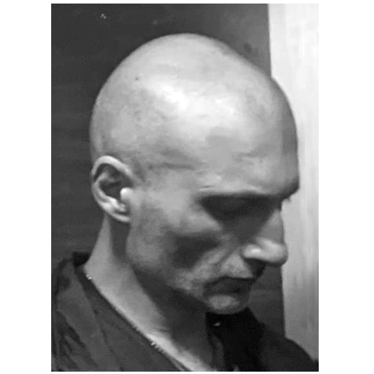

Lado Oniani (b. 1980) is a multimedia artist, musician, and inventor.
His multidisciplinary practice includes graphics, installation, sculpture, photography, video, animation, writing, AI-assisted practices, and new media. Since the late 1980s, his work has developed through exhibitions, publications, collaborative projects, experimental film and animation, sound and media-based works, and international art initiatives.
Selected exhibitions, projects, and collaborations, 1988–
1988 — Awarded a diploma for successful participation in a group exhibition at H. Akhvlediani Gallery, Georgia.
1991 — Group exhibition, H. Akhvlediani
Gallery, Tbilisi, Georgia. Exhibition photographs and the
September 9, 1992, issue of the Georgian Soviet magazine
Drosha, featuring works from 1986–1988.
Exhibition footage (1991).
View works.
View event photos.
Some works, including the ABC series, later served as visual
material for Theatre of Mimodrama posters and costume designs,
including Hamlet (Georgia, 1994) and
Don Juan (Germany, 1996). This artistic lineage later
continued through
@movementtheatre, alongside
@synetictheatre.
View event photos.
1993 — Won first place in the young artists’
competition My Flying Apparatus, Georgia / France.
View work.
1994 — Design for the pantomime theatre production Hamlet, Georgia / Germany. Based on works from 1988–1991.
1995 — Exhibition, Caucasian House, Georgia.
1996 — Design for the pantomime theatre production Don Juan, Georgia / Germany. Based on works from 1988–1991.
2000 — The Sun Is My Mother, Caucasian House, Georgia.
2001 — Exhibition, International Art Center, Georgia.
2001 — Culture: Synthesis and Symbioses / ER.MUS — Parallel City, collaborative project, Georgia.
2002 — Culture: Synthesis and Symbioses / ER.MUS — Modern Myths, collaborative project, Georgia.
2002 — Publication and illustration, 20th Century Poetry. Illustration for a poem by Giorgi Kuchishvili.
2002 — Publication of Asymmetric Facets.
2002 — Animation, Movie House, Georgia.
2002 — Vanguard and Underground Films Festival, Georgia / Germany.
2002 — Modern Art Festival, Ukraine.
2003 — Exhibition, S. Amiranashvili State
Museum of Art, Georgia.
View event photos.
2003 — Exhibition, L. Gudiashvili Exhibition Hall, Georgia.
2007 — Release of CDCTCC.
2008 — Telephone Software. A continuously operating information object that drifts through random numbers in the telephone network. If the receiver is picked up in time, after transmitting its message, the program calls the next random number.
2009 — CTP Start: TBILISI 6 — Never On Sunday. Varketili District House, Varketili-3, IV Microrayon, Building 425, Georgia, Thursday, December 3, 2009. Project website.
2011 — Installation, Snowflake.
Project segments: Function Algorithm, Information Audio
Object, WTP Telephone Software, and Videos. Presented as part
of the group exhibition
A Fragment of Time Which Is Not Recorded at
@cca_tbilisi
— Center of Contemporary Art Tbilisi, Georgia, April 16, 2011.
Funded by the Open Society Georgia Foundation.
View event photos.
Video archive.
YouTube:
@ladovideo
|
@liquescensquartz.
2011 — Exhibition, BROOM,
Switzerland.
View event photos.
2013 — Sculpture exhibition, Nectar Gallery,
Georgia.
View event photos.
2013 — Audio-video installation,
liquescensquartz, Center of Contemporary Art,
Georgia.
View event photos.
2021 — Participation in
Rivers Magic Garden, an exhibition organized by the
Center of Contemporary Art, Georgia, October 22–29, 2021.
View event photos.
2024 — Collaboration on the film
Air Blue Silk directed by Irina Jordania (Parachute
Films). Actor; composer of one original soundtrack track;
provided a robotic device from the
Modular Robot
and
Paragrid Software
project (Engineering Research Lab) used in the film.
IMDb.
Production:
parachutefilms.ge.
2024 — DUMP/MEDS, installation and
group exhibition, Scorcher Gallery, Tbilisi, Georgia. Curated
by Lado Oniani and Arseny Bagdasarov. Presented as part of the
Underground Instrumental and Electronic Musical Mini Art
Festival, organized by Sub.Network, an independent musicians’
and artists’ collective collaboration movement, January 22–26,
2024.
Exhibition visuals.
DUMP documentation.
Exhibition poster.
Festival poster.
Press.
Venue:
@scorcher.gallery.
View event photos.
2024 — Scyscope, trio exhibition,
Scorcher Gallery in collaboration with Yufiko, Tbilisi,
Georgia, October 5, 2024. Participation in a group exhibition.
Venue:
@scorcher.gallery.
Collaborator:
@yufiko_tbilisi.
View event photos.
2025 — BRUT JAW (2006), sculpture
exhibited in a presentation by
@rubeeeeeeezh. Materials: rebar, concrete, tar, whitewash, and spray
paint.
Artist / exhibition link.
View sculpture photo.
2025 — Scorcher Fest, exhibition
presentation, Scorcher Gallery in collaboration with the
Center of Contemporary Art Tbilisi (CCA-T), August 1–15, 2025.
Scorcher Gallery.
Center of Contemporary Art Tbilisi.
View event photos.
2026 — Group exhibition, CALENDAR TBILISI,
Tbilisi, Georgia, October 16, 2026. Participation and
organization. Exhibition opening featuring works by
participating artists, with selected works available for
viewing and sale during the exhibition’s approximately
one-month run.
Venue:
@calendar_tbilisi.
View exhibition photos.
His musical practice encompasses composition, songwriting, guitar, multi-instrumental performance, and sound design, spanning solo projects and collaborations. His personal music project, Slavemarket, alongside other releases and collaborations, is documented on Bandcamp and SoundCloud.
He is also a founding member of PLAKQSA, formed in Tbilisi’s underground scene in 1996. Now active as a duo of its original members, he serves as the band’s guitarist, composer, and multi-instrumentalist.
He founded independent research labs focused on software, engineering, industrial design, and game development. Selected projects and research are documented through Engineering Research Lab, Game Development Lab, and Software Research Lab.